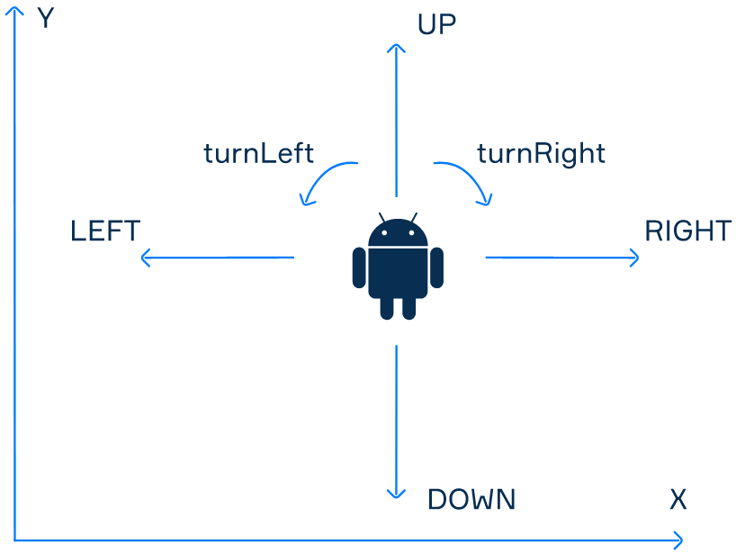

There is a robot in the game field. The position of the robot in this field is described by two integer coordinates:
X and Y. The X axis is oriented from left to right, the Y axis —
from bottom to top.
At the initial moment, the robot is located at some coordinate on the field. It's also known where the robot looks: up, down, to the right or to the left. The initial position of the robot and its direction can have any values. You need to bring the robot to the destination point of the game field.
A robot is described by the Robot class. You can use the following methods of this class (with unknown
implementation):
public class Robot {
public Direction getDirection() {
// current direction
}
public int getX() {
// current X coordinate
}
public int getY() {
// current Y coordinate
}
public void turnLeft() {
// rotate the robot 90 degrees counterclockwise
}
public void turnRight() {
// rotate the robot 90 degrees clockwise
}
public void stepForward() {
// take one step in the current direction
// x or y coordinate will be changed by 1
}
}The direction of the robot is an enumeration:
public enum Direction {
UP, DOWN, LEFT, RIGHT
}It looks like the picture below:
Example
To bring the robot to the destination point (3, 0), the method should call the following methods:
robot.turnRight();
robot.stepForward();
robot.stepForward();
robot.stepForward();Another Example
To bring the robot to the destination point (0, -1), the method should call the following methods:
robot.turnRight();
robot.turnRight();
robot.stepForward();
robot.turnLeft();
robot.stepForward();
robot.stepForward();Try to crack this problem!